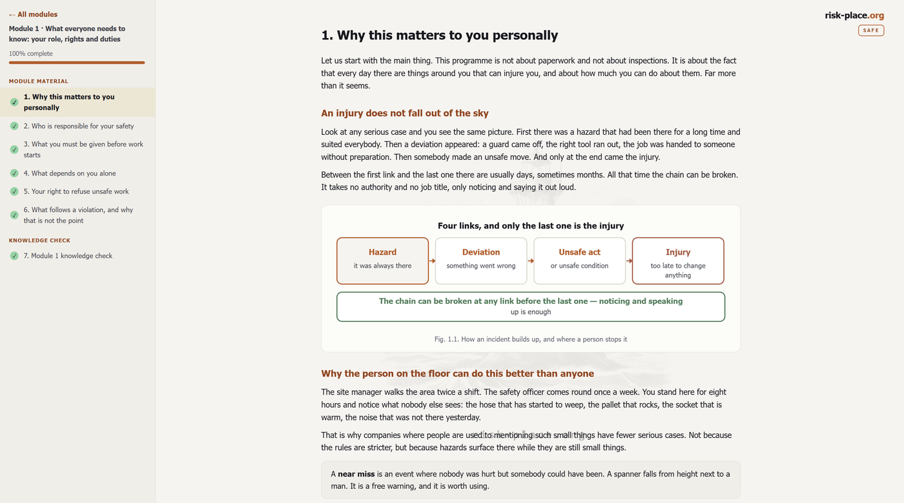
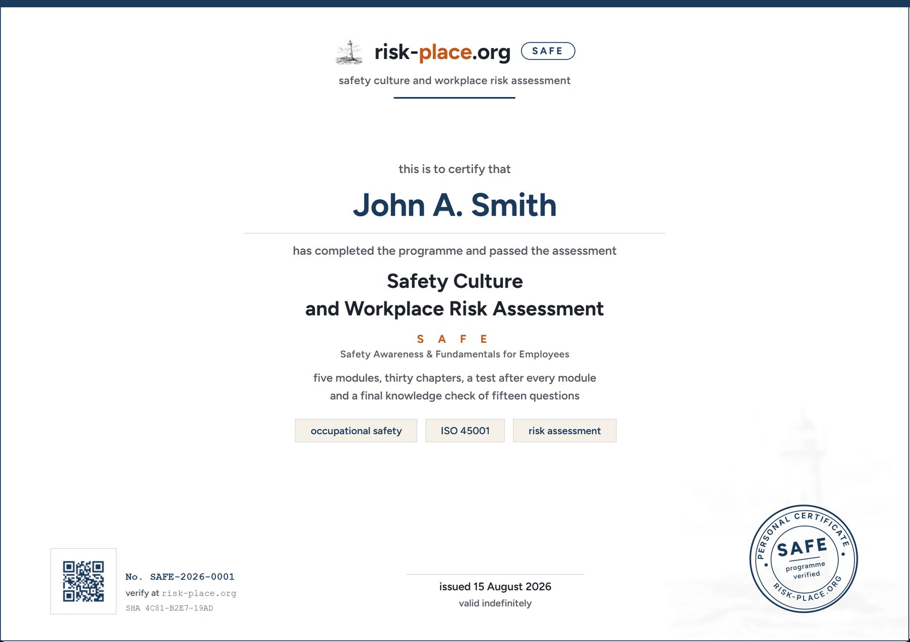

السلامة المهنية · عن بعد · وردية واحدة
برنامج سلامة كُتب لفرق المواقع في الخليج، بالعربية والإنجليزية، على الهاتف الذي يحمله العامل أصلا.
أغلب مواد التعريف بالسلامة مكتوبة للمدقق ولا يقرأها أحد. أما هذا البرنامج فمكتوب للرجل على السقالة وللسائق في الساحة، وينتهي بشهادة باسم المشارك.
الفصل التجريبي مفتوح، بلا نموذج وبلا بريد إلكتروني.
من يدرس البرنامج هو الفرقة. أما من يختاره ويدفع ثمنه فشخص آخر، ولديه مجموعة مشكلات مختلفة تماما.
عليكم إثبات أن التعريف تم، وأنه فُهم، وأنه غطّى ما يقتل الناس فعلا في مواقعكم. كشف التوقيعات يثبت الحضور، لا الفهم.
يطلب المقاول الرئيسي دليلا على تدريب السلامة قبل التعبئة. وأنتم تحتاجون شيئا قابلا للدفاع عنه، وسريعا، وممكنا لفرقة وصلت الأسبوع الماضي.
تضعون أشخاصا في مواقع لا تسيطرون عليها. والعامل الذي يصل وقد أنهى البرنامج، بشهادة يمكن التحقق منها، أعلى قيمة وأسرع تنسيبا.
ثلاثة أمور صحيحة في موقع خليجي وغير صحيحة في الدورات التي تُشترى له عادة.
الدورة التي تُقدَّم بالإنجليزية وحدها يفهمها المشرف ويتصفحها الباقون. وما لا يُفهم لا يُطبَّق، وسجل الإنجاز لا يقول شيئا عن ذلك.
المواد المستوردة تعالج الحر بفقرة عن شرب الماء. أما هنا فهو خطر مهني موسمي له قواعده وحالته الإسعافية وطريقته في قتل من كان يشعر أنه بخير قبل ساعة.
الناس يصلون باستمرار، والخطة السنوية للتدريب لا تصل باستمرار. والبرنامج الذي يحتاج قاعة ومدربا وموعدا سيظل دائما متأخرا عن التركيبة الفعلية للفرقة.
بُني هذا البرنامج في مواجهة هذه الثلاثة، وبهذا الترتيب. وكل ما تبقى في هذه الصفحة يتفرع منها.
تحمل الوحدة الخامسة سيناريوهات قطاع واحد وحواجزه وأنواع أذون العمل فيه وقائمة فحص الوردية الخاصة به، لأن قائمة فحص مستودع تُقرأ في منصة نفطية يتجاهلها القارئ من السطر الثاني.
السقوط من ارتفاع، والاصطدام بالأجسام، وانهيار الحفريات، والتمديدات الكهربائية المؤقتة. بطاقات السقالات، ومناطق الحظر تحت عمليات الرفع، ودعم الحفريات مهما قصر العمل.
فقد الاحتواء، والحريق والانفجار، والأماكن المغلقة، وكبريتيد الهيدروجين. العزل وفحص الغاز وترتيبات المراقبة والانضباط حول إذن العمل.
فصل الرافعات عن المشاة، وانهيار الأرفف، والسقوط عن أرصفة التحميل. الزوايا العمياء وخطوط الارتفاع وقفل العجلات وقاعدة عدم تسلّق الأرفف.
يمكن للمؤسسة الواحدة تشغيل أكثر من إصدار في وقت واحد، وتذكر الشهادة أي إصدار أُنجز.
كل فصل شاشة واحدة من النص، وشكل توضيحي، ومقارنة بين ما يحدث عادة وما ينبغي أن يكون، وسطر واحد يخرج به القارئ. لا شيء أطول من استراحة قهوة.
دورك وحقوقك وواجباتك. ما الذي يجب أن يوفره صاحب العمل قبل بدء العمل، وما الذي يعتمد عليك وحدك، وحق رفض العمل غير الآمن، مذكورا بوضوح لأن أغلب الفرق لم يُقل لها قط إن هذا الحق موجود.
تنتهي بـاختبار معرفة
الفرق بين الخطر والمخاطرة، وتقدير المخاطرة في دقيقة، والعمل على ارتفاع وبالكهرباء، والمعدات والمركبات، والأخطار البطيئة التي تُحصّل ثمنها بعد عشرين سنة، والحرارة، وهرم الضوابط.
تنتهي بـاختبار معرفة
ما تعنيه الثقافة فعلا في الموقع، وهرم الحوادث، وكيف تُصاغ البلاغات لتصل، وحق إيقاف العمل، ومراجعة الحالة دون البحث عن مذنب.
تنتهي بـاختبار معرفة
الترتيب الذي ينقذ اثنين بدل واحد، وما لا يُفعل أبدا، وحدود الإسعافات الأولية، والفرق بين الإنهاك الحراري وضربة الشمس، وقاعدة الثماني والأربعين ساعة، والحريق والأحداث الوشيكة، ودور العامل في التحقيق.
تنتهي بـاختبار معرفة
أين يقع الضرر غير القابل للإصلاح في قطاعكم، وثلاثة سيناريوهات شديدة مع الحاجز الذي يوقف كل واحد منها، وإذن العمل، والعمليات المتزامنة، وقائمة فحص من سبع نقاط لوردية الغد.
تنتهي بـاختبار معرفة والتقييم النهائي
في كل صيف يتكرر الأمر نفسه في مواقع الخليج، وفي كل عام لا تقول المواد المشتراة له شيئا يُذكر عنه. هنا تأخذ الحرارة فصلا كاملا في وحدة الأخطار وفصلا ثانيا في وحدة الاستجابة.
أن الحرارة تأخذ الحكم على الأمور قبل أن تأخذ القوة، فالرجل يصير أبطأ وأقل دقة قبل ساعة من شعوره بالتوعك، وهو لا يلاحظ ذلك على نفسه. وأن العطش يأتي متأخرا، فالشرب يبدأ قبله. وأن التأقلم يستغرق نحو أسبوعين وأن العامل الوافد حديثا هو الأعلى خطرا في الموقع. وأن الزميل الذي توقف عن التعرّق ليس في طريقه إلى التحسن.
رزنامة الراحة الظهيرة في الإمارات والسعودية وقطر بالتواريخ والساعات الفعلية، والتزامات صاحب العمل في الظل والتبريد وماء الشرب وتعويض الأملاح، والتمييز الذي يقرر حياة إنسان، فالجلد الرطب البارد مع وعي حاضر إنهاك، والجلد الساخن الجاف مع ارتباك ضربة شمس، وتلك اتصال بالطوارئ لا استراحة في الظل.
الإصدار العربي مكتوب لا مترجم آليا. الأنظمة مذكورة بأسمائها العربية الرسمية، والدلالات مثل ISO 45001 وOSHAD-SF تبقى كما تُكتب في الوثائق العربية حتى يستطيع المشرف الرجوع إليها.
يتوقف الفهم عن الاعتماد على استعداد المشرف للترجمة. وتحصل الفرقة متعددة الجنسيات على المحتوى ذاته بدل خلاصة تنتقل شفهيا. والفصول الأهم، من حق إيقاف العمل إلى الحالة الإسعافية للحر وقاعدة الثماني والأربعين ساعة، هي الأكثر ضياعا في الترجمة غير الرسمية.
الأشكال التوضيحية متطابقة في الإصدارين، فالمشرف الذي يشير إلى شكل يشير إلى ما يراه العامل نفسه. وتصلكم سجلات الإنجاز ودرجات الاختبارات والشهادات بصيغة واحدة متسقة أيا كانت لغة الدراسة.
لا صور مخزنية لأشخاص بخوذ. هذا هو البرنامج كما يفتح على الهاتف.

يعمل على أي هاتف عبر المتصفح. لا شيء يُثبَّت، ولا حساب على العامل أن ينشئه.
مستويان، وكلاهما يقاوم ما يفعله الناس عادة بمواد السلامة عن بعد، وهو التنقل السريع بينها وتداول الإجابات.
تنتهي كل وحدة باختبار قصير على مادتها. ولا يفتح إلا بعد وضع علامة القراءة على كل فصولها.
خمس عشرة حالة من الوحدات الخمس. اثنتا عشرة إجابة صحيحة للنجاح. ولا يفتح إلا بعد إتمام كل الوحدات واختباراتها.
تُخلط الأسئلة وخيارات الإجابة في كل محاولة، فلا يمكن حفظ التسلسل ولا موقع الإجابة الصحيحة ولا تداولهما.
لا سؤال واحد يسأل عن معنى مصطلح. كل سؤال يصف شيئا يجري في وردية ويسأل عن التصرف الصحيح.
عدد المحاولات غير محدود. المقصود أن تنتهي الفرقة وهي تعرف هذا، لا أن يرسب أحد.
اختبار معرفة بعد كل وحدة وتقييم نهائي في الختام. الشهادة تتبع النجاح لا مجرد تسجيل الدخول.
تحمل اسم الشخص والإصدار القطاعي الذي أنجزه وتاريخ الإصدار. عامل واحد ووثيقة واحدة، بلا كشوف جماعية.
تحمل كل شهادة رقما. والمقاول الرئيسي الذي يسأل عما تلقته فرقتكم يتحقق منها هنا في ثوان.
ليست اعتمادا حكوميا ولا تحل محل مؤهل نظامي. ونقول ذلك على الشهادة نفسها، فالوثيقة التي تدّعي أكثر مما تملك تسقط في اللحظة التي تُفحص فيها.

الشهادة، باسم المشارك وبتاريخ ورقم. النموذج معروض.
أدخلوا الرقم المطبوع على الشهادة.
كُتب البرنامج على الأساس الدولي وعلى ممارسة هذه المنطقة. وحيث تكون القاعدة محلية، يذكر الفصل أي قاعدة ومن أين.
| المصدر | ما يغطيه في البرنامج |
|---|---|
| ISO 45001:2018 | تحديد الأخطار وتقييم المخاطر، وهرم الضوابط، والتشاور مع العمال، والتحقيق في الحوادث، والاستعداد للطوارئ |
| ILO C155 / R164 | حق العامل في الابتعاد عن خطر وشيك وجسيم دون أن يتعرض لعواقب |
| OSHAD-SF | إطار أبوظبي، تقييم مخاطر موثّق، وأنظمة أذون، وإدارة المقاولين، والإبلاغ عن الحوادث |
| بلدية دبي · الصحة والسلامة | خطط سلامة المواقع، والعمل على ارتفاع، والعزل الكهربائي، واشتراطات السلامة من الحريق |
| قرار مجلس الوزراء 33 لسنة 2022 | الإبلاغ عن إصابات العمل والأمراض المهنية خلال ثمان وأربعين ساعة من علم صاحب العمل |
| الراحة الظهيرة · وزارة الموارد البشرية | التقييد الموسمي للعمل تحت الشمس المباشرة، وتوفير الظل والتبريد، والتدريب على الإجهاد الحراري والتأقلم |
تواريخ الراحة الظهيرة وساعاتها مذكورة في البرنامج للموسم الجاري وتُراجَع كل عام. وحيث تختلف ولايتكم عن الإمارات، يعرض الفصل المقارنة بدل قاعدة بلد واحد.
بناء، أو نفط وغاز، أو خدمات لوجستية. وأكثر من واحد إن كانت العمالة مختلطة.
البرنامج صفحة واحدة. تقع على خادمكم أو على خادمنا، والسياسة عندكم هي التي تقرر. لا منصة تُرخَّص ولا برنامج يُثبَّت.
أي هاتف وأي متصفح. ويُحفظ التقدم، فيتوقف الرجل عند استراحة ويكمل بعدها.
الإنجازات ودرجات الاختبارات وأرقام الشهادات، بالوتيرة التي تطلبونها.
المدة المعتادة من القرار إلى بدء فرقة العمل، يوما عمل.
السعر للشخص الواحد، بأي من اللغتين، وبالإصدار القطاعي الذي تختارونه، مع شهادات باسم المشاركين وسجلات الإنجاز. والوصول الفردي مدته ستة أشهر وينتهي بالشهادة نفسها كما في المسار المؤسسي. ومن 500 شخص يُتفق على السعر حسب الطلب، وترخيص الموقع لمشروع واحد لسنة يبدأ من من 35٬000 درهم.
أخبرونا بالقطاع وبعدد الأشخاص تقريبا. العرض التوضيحي رابط يعمل للبرنامج كاملا لا شرائح عنه، وطلب الوصول يعود إليكم بفاتورة وبتاريخ البدء الذي تحددونه.
نحو أربع ساعات من القراءة والإجابة. وتشغّله أغلب المؤسسات في وردية واحدة أو تقسّمه على استراحتين أو ثلاث. ويُحفظ التقدم، فالتوقف لا يكلّف شيئا.
لا. يفتح الشخص رابطا، ويدخل اسمه مرة واحدة من أجل الشهادة، ويبدأ. كثير من عمال المواقع بلا بريد عمل، والبرنامج الذي يشترطه لا يُنجَز.
تُحمَّل الصفحة مرة واحدة ثم تعمل من الهاتف. وضعف الإشارة في الموقع لا يقطع على أحد وحدة في منتصفها.
نعم. هو ملف واحد لا يحتوي على أي شيء خارجي. ضعوه على شبكتكم الداخلية أو خادمكم وسيعمل بالطريقة ذاتها.
هي إصدار مستقل، مكتوب لا مترجم، والأنظمة فيه بأسمائها العربية الرسمية. والأشكال التوضيحية مشتركة بين الإصدارين حتى ينظر المشرف والعامل إلى الشكل نفسه.
ليس بذاته، ولن ندّعي غير ذلك. وحيث تشترط ولايتكم تدريبا معتمدا من جهة معتمدة، فهذا البرنامج يدعم ذلك الالتزام ولا يحل محله. أما ما يمنحكم إياه فهو دليل على أن المحتوى دُرس وقُيّم.
نعم، فقواعدكم ونماذج أذونكم وأرقام الطوارئ ونقاط التجمع لديكم يمكن بناؤها داخل الوحدة الخامسة. وهذا عمل منفصل يُسعَّر على حدة.
تُراجَع الأرقام الموسمية والمراجع النظامية سنويا. ويحصل العملاء الحاليون على الملف المحدَّث.